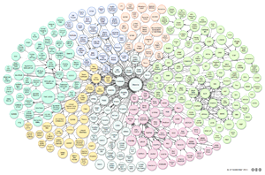
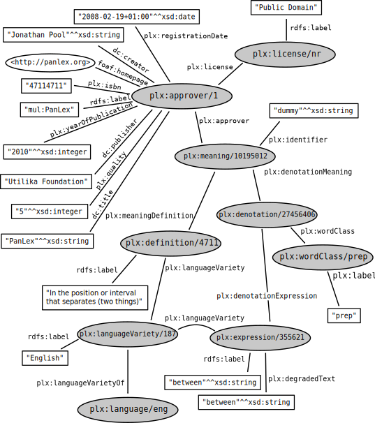
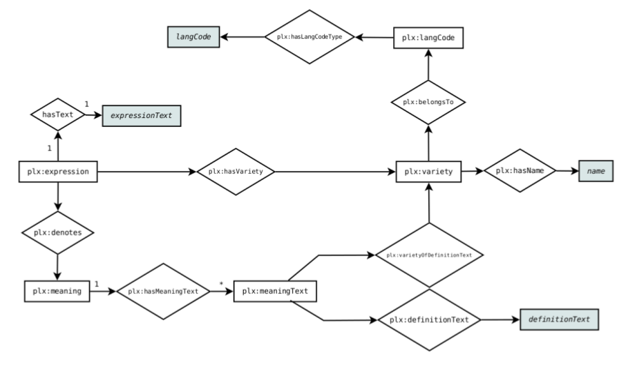

 Linking Open Data cloud diagram, by Richard Cyganiak and Anja Jentzsch. CC-BY-SA. lod-cloud.net
On this page we collect our efforts of making PanLex part of the Linked Open Data cloud, which offers the following advantages:
| Full Dump (~872MB) (Preview) |
| DBpedia Links (~19MB) (Preview) |
| Ontology (~3.3K) |
The SPARQL endpoint is available at http://panlex.org/sparql.
Example Resources:
These two images provide an overview of how classes and properties in the RDF version of PanLex relate.
|  |  |
The following table summarizes the number of triples, classes and properties.
| Triples: | 272.043.070 |
| Classes: | 9 |
| Properties: | 8 |
This table lists the number of instances per class:
| Class | Instances |
|---|---|
| Approvers | 3,905 |
| Expressions | 18,580,594 |
| Languages | 7,839 |
| Language Varieties | 7,248 |
| Meanings | 20,023,427 |
| Definitions | 2,522,605 |
| Denotations | 50,803,243 |
| Users | 7 |
| Licenses | 10 |
As PanLex is comprised of thousands of data sources, license information is included in the dataset for each approver. The following table shows some examples on this subject.
| List all available licenses and their usage count | List approvers and their license | List approvers under public domain license |
Prefix plx: <http://panlex.org/plx/>
Select ?l (Count(*) As ?c) {
?s plx:license ?l
}
Group By ?l
|
Prefix plx: <http://panlex.org/plx/>
Select * {
?s
a plx:Approver ;
plx:license ?l
}
Limit 100
|
Prefix plx: <http://panlex.org/plx/>
Select * {
?s
a plx:Approver ;
plx:license <http://panlex.org/plx/license/nr>
}
Limit 100
|
| Run it! | Run it! | Run it! |
The PanLex RDF dataset is created using the Sparqlify RDB-RDF mapping tool. The corresponding RDF view definitions are available here. The Linked Data interface is powered directly by the PanLex's Postgres database. For improved query performance, the source data is also dumped as RDF and loaded into an OpenLink's Virtuoso RDF store.